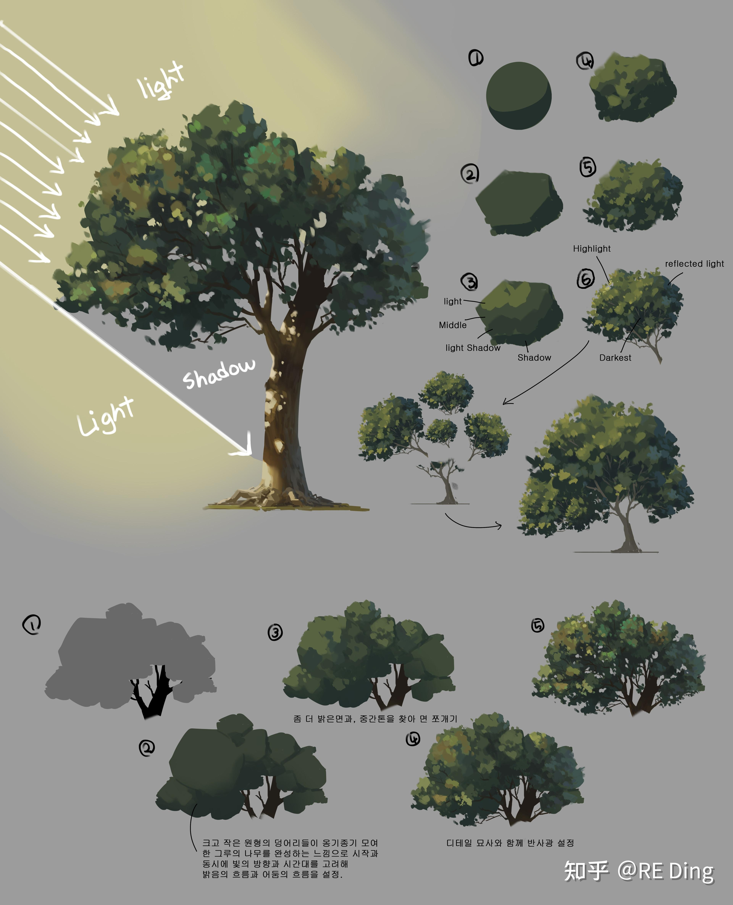
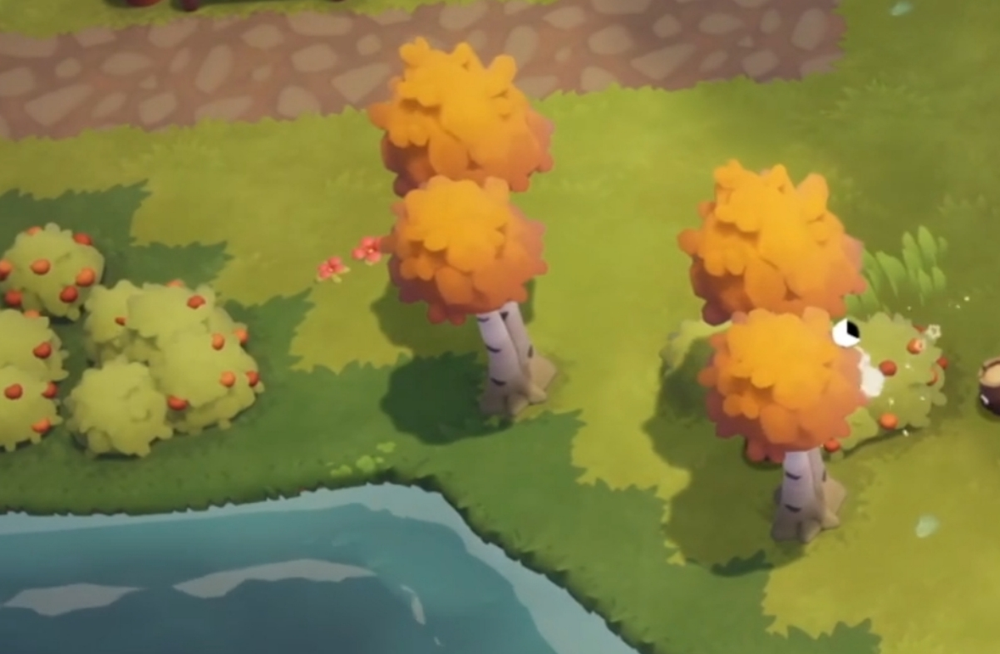
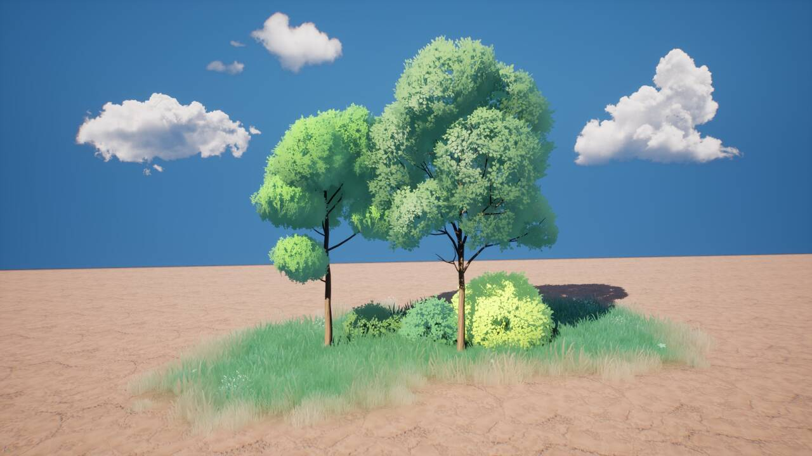

【TA】风格化树材质调优全过程 2024-04-22 TA学习 风格化渲染树的材质渲染已经是一个很大的类目了，一些基础的处理不再赘述。此处提出我个人为了提升效果琢磨的一些方式方案。 本文为原创内容，转载请注明地址。 参考   这是美术提供的参考图，整个参考图我提取的美术特点信息效果如下： 重点细节信息都在亮部或者明暗过度处 暗部较整体、模糊，形状不突出 光照球形 效果我做了的工作： 拍平、模糊暗部的GI效果 暗部阴影颜色更加风格化、整体，降低Diffuse信息 使得光照效果更整块，不细碎 总的效果从左到右原始——>处理完成 Newer 【TA】假透光效果灯具 Older 【TA】地形的破Tiling效果实现和对比